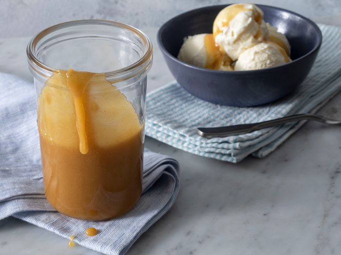

Best Caramel

Description
This caramel sauce recipe is super easy to make with just 3 ingredients.
It's perfect for drizzling on top of ice cream, apple pie, cheesecake, and
anything else you want to put it on!
Ingredients
- 1 cup packed brown sugar
- ½ cup unsalted butter
- ¼ cup milk
- 1 teaspoon vanilla extract (Optional)
Steps
-
Gather all ingredients.
-
Combine brown sugar, butter, and milk in a saucepan over medium heat;
bring to a boil. Cook until thickened, 1 to 2 minutes.
-
Remove from the heat and stir in vanilla extract.
-
Serve over ice cream and enjoy!